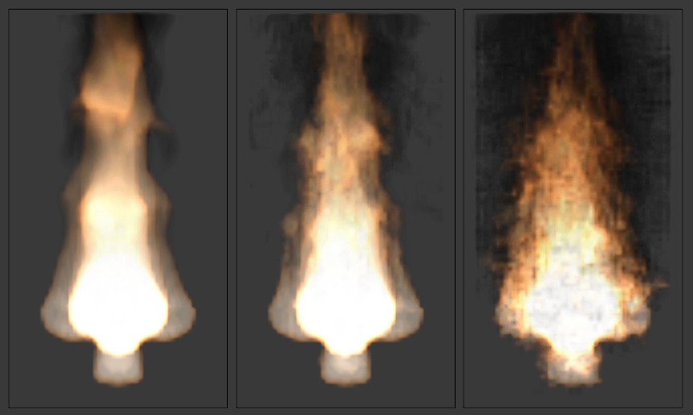

Домен Диму -- Smoke Domain¶
Орієнтир -- Reference
| Panel: | |
|---|---|
| Type: | Domain |
Об'єкт домену вміщує усю імітацію диму. Дим і вогонь не можуть виходити за межі домену, вони або будуть відштовхуватися від його країв, або зникати, залежно від устав домену.
Майте на увазі, що великі домени вимагають вищої роздільності та більше часу на запікання. Вам бажано робити його достатньо великим, щоб імітація помістилася у ньому, але не настільки великим, щоб вона надто довго обчислювалася.
Для створення домену додайте куб за допомогою «Додання > Сіть > Куб» -- , Shift-A та трансформуйте його, допоки він не охопить усю область, потрібну для диму. Дозволені всі його трансформації -- пересування, обертання та масштабування. Для перетворення куба у домен диму клацніть на кнопці «Дим» -- Smoke у вкладці «редактор Властивостей > Фізика» -- , або потім увімкніть кнопку «Домен» -- Domain серед кнопко опції «Тип Диму» -- Smoke Type.
Ghi chú
Ви можете використовувати і інші форми сітьових об'єктів як об'єкта домену, але імітатор диму буде використовувати кубоїдну габаритну коробку -- bounding box такої форми для визначення меж домену. Іншими словами, фактична форма домену залишатиметься все одно прямокутною, кубічною.

Опції домену диму -- Smoke Domain.
Опції¶
- Роздільність -- Resolution
Домен диму підподіляється на багато «комірок», що називаються вокселями (дивіться детальніше про цей термін тут -- voxel), які представляють «пікселі» диму. Ця устава керує кількістю таких підподілів у домені. Вища кількість цих підподілів -- це один зі способів створення високо роздільного диму (дивіться Smoke High Resolution).
Оскільки ця роздільність визначається у термінах «підподілів» -- subdivisions, то більші домени вимагають більше поділень для отримання еквівалентної роздільності у порівнянні з невеликим доменом.
Також дивіться тут -- Note on Divisions and High Resolution.
- Час: Масштаб -- Time Scale
- Керує швидкістю імітації. Нижчі значення дають «уповільнено рухому» імітацію, тоді як вищі значення можуть використовуватися для отримання більш швидкої імітації (корисно для генерування диму для використання у нерухомих рендерах, зображах).
- Зіткнення з Границею -- Border Collisions
Керує тим, через які сторони домену дозволяється «проходити» диму та зникати без впливу на решту імітації та від яких сторін дим має відбиватися, відхилятися, ніби він стикається з об'єктом зіткнення -- Collision Object.
- Відкрито Вертикально -- Vertically Open
- Дим зникає, коли він стикається з верхом або низом домену, та відштовхується від його стін.
- Відкрито -- Open
- Дим зникає, коли він стикається з будь-якою межею домену.
- Зіткнення з Усіма -- Collide All
- Дим відштовхується від усіх меж домену.
- Щільність -- Density
Керує тим, наскільки дим буде густим.
- Значення вище 0 призводять до піднімання диму (імітування диму, який легший за навколишнє повітря).
- Значення нижче 0 будуть давати опускання диму (імітування диму, який важчий за навколишнє повітря).
- Різниця Температур -- Temperature Difference
Устава Temperature Difference керує тим, наскільки на дим впливає температура.
Ефект цієї устави залежить від різниці температур -- Temperature Difference об'єкта потоку:
- Значення вище 0 даватимуть піднімання диму, коли Temperature Difference для об'єкта потоку задана як додатне значення, та опускання диму, коли Temperature Difference для об'єкта потоку задана як від'ємне значення.
- Значення нижче 0 даватимуть протилежний ефект, тобто дим, емітований від об'єктів з додатною Temperature Difference буде опускатися, а дим від об'єктів потоку з від'ємною Temperature Difference -- буде підніматися.
Зауважте, що дим від кількох об'єктів потоку з різними температурами буде змішуватися та тепліти/охолоджуватися, допоки не буде досягнута рівновага.
- Завихреність -- Vorticity
Керує величиною турбулентності у димі. Вищі значення будуть давати багато маленьких вихорів, тоді як нижчі значення даватиму більш згладжені форми.

Порівняння різних величин завихреності. Домен зліва має значення завихреності як 3, тоді як домен справа -- значення завихреності як 0.01.
- Розчинення -- Dissolve
- Дозволяє диму розсіюватися з часом.
- Час -- Time
- Швидкість розсіювання диму у кадрах.
- Повільно -- Slow
- Розчиняє дим у логарифмічному порядку. Розчиняє швидко на початку та більш повільно далі.
Полум'я в Димі -- Smoke Flames¶
Орієнтир -- Reference
| Type: | Domain |
|---|---|
| Panel: |
- Швидкість -- Speed
- Наскільки швидко горить паливо. Вищі значення дають менше полум'я (паливо згорає перед тим, як воно зможе віддалитися від свого джерела), менші значення дають більше полум'я (паливо повільніше згорає при віддаленні від джерела).
- Дим -- Smoke
- Величина додаткового диму, що створюється автоматично для імітації згорання палива.
- Завихреність -- Vorticity
- Додаткова завихреність для полум'я.
- Запалення -- Ignition
- Мінімальна температура полум'я.
- Максимум -- Maximum
- Максимальна температура полум'я.
- Колір Диму -- Smoke Color
- Колір диму, створюваного спаленням палива.
Адаптивний Домен Диму -- Smoke Adaptive Domain¶
Орієнтир -- Reference
| Type: | Domain |
|---|---|
| Panel: |
При увімкненні, домен буде адаптивно звужуватися для найкращого вписування у ньому диму, заощаджуючи час на обчислення, залишаючи вокселі без диму поза імітацією. Якщо устава «Доповняльно» -- Additional не використовується, то адаптивний домен не буде виходити за межі оригінального домену.
- Доповняльно -- Additional
- Кількість вокселів, додатково доданих поза межами оригінального домену.
- Припуск -- Margin
- Amount of extra space to leave around smoke, measured in voxels. With very fast-moving smoke larger margins may be required to prevent the smoke from being cut off by the adaptive boundary, but note this will increase the number of voxels which need to be computed.
- Поріг -- Threshold
- Найменша величина диму, яку може містити воксель, нижче якої останній вважається порожнім та адаптивному домену дозволяється відсікати імітацію.
Дим з Високою Роздільністю -- Smoke High Resolution¶
Орієнтир -- Reference
| Type: | Domain |
|---|---|
| Panel: |
The High Resolution option lets you simulate at a low resolution and then it uses noise techniques to enhance the resolution without actually computing it. This allows animators to set up a low resolution simulation quickly and later add details without changing the overall fluid motion. Also see Note on Divisions and High Resolution.
- Роздільність: Поділи -- Resolution: Divisions
- Фактор, на основі якого збільшується роздільність диму при використанні вказаного методу шумування.
- Показ з Високою Роздільністю -- Show High Resolution
- Show the high resolution version in the viewport (may cause viewport responsiveness to suffer).
- Метод Шуму -- Noise Method
Ці два його варіанти, «Брижі» -- Wavelet та «Швидке Перетворення Фур'є» -- FFT є дуже подібними.

Порівняння методів шумування. Wavelet -- зліва, FFT -- справа.
Ghi chú
Метод Wavelet -- «Брижі» є імплементацією наукової роботи Turbulence for Fluid Simulation.
- Сила -- Strength
Сила шумування.
Зліва направо, значення сили домену з високою роздільністю задано як 0, 2 та 6.
{kind=link}
Групи Диму -- Smoke Groups¶
Орієнтир -- Reference
| Type: | Domain |
|---|---|
| Panel: |
- Група Потоку -- Flow Group
- При заданні, тільки об'єктам, визначеним у цій групі -- Group, буде дозволено діяти як об'єкти потоку у цьому домені.
- Група Зіткнення -- Collision Group
- При заданні, тільки об'єктам, визначеним у цій групі -- Group, буде дозволено діяти як об'єкти зіткнення у цьому домені.
Кеш Диму -- Smoke Cache¶
Орієнтир -- Reference
| Type: | Domain |
|---|---|
| Panel: |
Дивіться детальніше тут -- Baking.
Вагомості Полів Диму -- Smoke Field Weights¶
Орієнтир -- Reference
| Type: | Domain |
|---|---|
| Panel: |
Ці устави визначають, наскільки гравітація та силові поля -- Force Fields впливатимуть на дим.
- Група Ефекторів -- Effector Group
- При заданні, на дим зможуть впливати тільки об'єкти із силовими полями, що входять у вказану групу.
- Гравітація -- Gravity
- Наскільки Гравітація -- Gravity впливає на дим.
- Усе -- All
- Загальний вплив усіх силових полів.
Інші устави визначають величини впливів окремих силових полів.
{kind=link}
Примітки щодо поділів та високої роздільності¶
Поділи Високої Роздільності -- High Resolution Divisions та Підподіли Домену -- Domain Subdivisions не еквівалентні. Використовуючи різні комбінації цих устав роздільності, ви можете отримувати варіації різних стилів диму.

Порівняння між доменом з 24 підподілами та 4 поділами High Resolution (зліва) та доменом з 100 підподілами та 1 поділом High Resolution (справа).
Імітації з низькою кількістю підподілів та великою кількістю поділів High Resolution загалом виглядають меншими у масштабі реального світу (більше полум'я тощо) та можуть використовуватися для досягнення пірокластичних стовпів виверження або вибуху, таких як це:
{kind=link}
Імітації з високим значенням підподілів домену Domain Division та низьким значенням деталей High Resolution тяжіють виглядати більшими у масштабі реального світу.